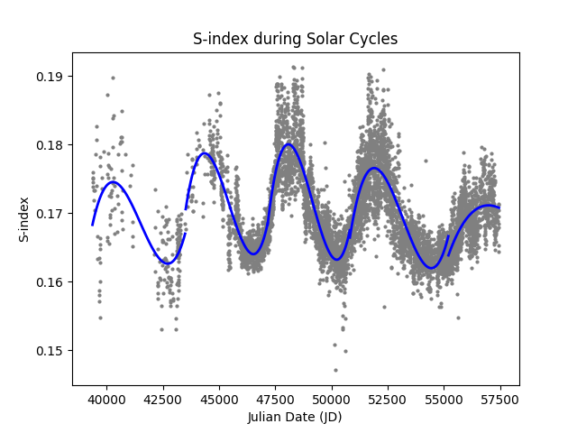
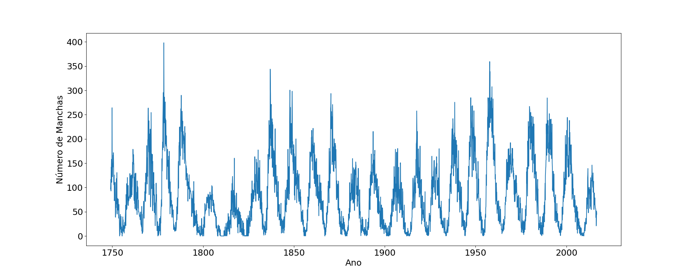
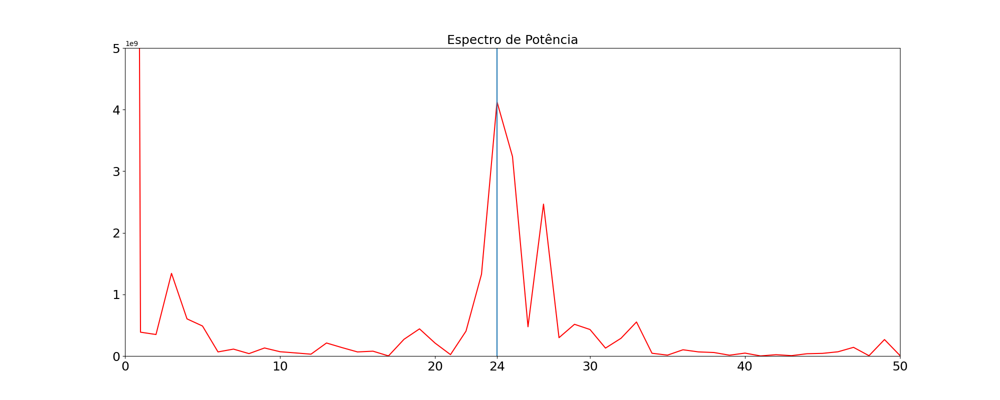
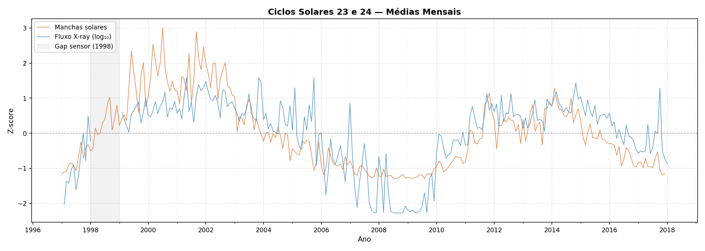
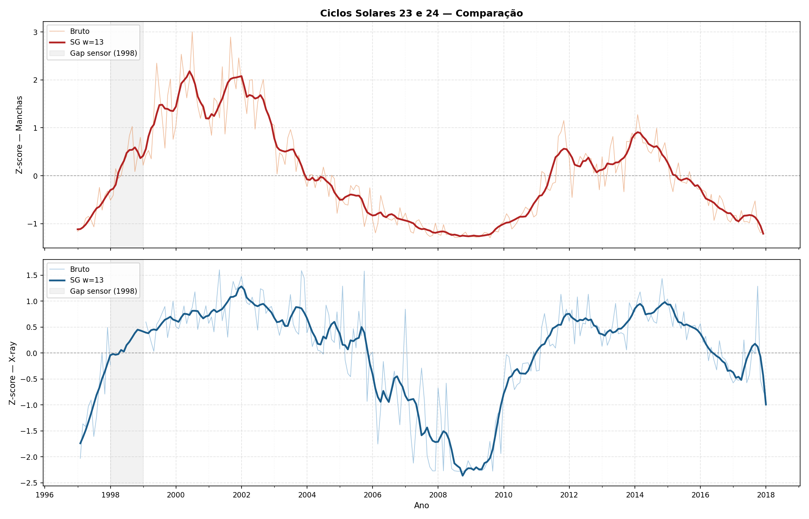

O ciclo solar é um fenômeno natural que ocorre aproximadamente a cada 11 anos, caracterizado por variações na atividade solar, como manchas solares, erupções solares e mudanças na radiação emitida pelo Sol. Durante o ciclo solar, a quantidade de manchas solares aumenta e diminui, afetando o clima espacial e a Terra de diversas maneiras.
O ciclo solar é dividido em duas fases principais: a fase de máxima solar, onde a atividade solar é mais intensa, e a fase de mínima solar, onde a atividade é mais baixa. Durante a máxima solar, as tempestades solares podem causar interferências em satélites, redes de energia e comunicações. Já durante a mínima solar, há uma redução na radiação ultravioleta emitida pelo Sol, o que pode influenciar o clima terrestre.
O estudo do ciclo solar é importante para entender os impactos que ele pode ter na Terra e para prever eventos solares que possam afetar nossas tecnologias e infraestrutura. Cientistas monitoram o ciclo solar usando satélites e observatórios para coletar dados sobre a atividade solar e suas consequências.
Curiosidades sobre o ciclo solar
O ciclo solar é causado por um processo chamado dínamo solar, que envolve a movimentação do plasma no interior do Sol.
A duração média do ciclo solar é de cerca de 11 anos, mas pode variar entre 9 e 14 anos.
Durante a máxima solar, as auroras boreais e austrais são mais frequentes e intensas devido ao aumento da atividade solar.
O ciclo solar pode influenciar o clima terrestre, com períodos de mínima solar associados a invernos mais rigorosos em algumas regiões.
O estudo do ciclo solar é fundamental para a previsão de tempestades solares, que podem afetar satélites, redes de energia e comunicações na Terra.
Análise do S-index e Ciclos Solares
Este projeto realiza uma análise temporal da atividade solar utilizando dados históricos do
índice S (S-index), extraídos de arquivos FITS.
O objetivo é identificar e visualizar os ciclos solares presentes nos dados,
cobrindo o período de 1966 a 2016.
Arquivo principal para execução:graphic.py
Tecnologias Utilizadas
Python
NumPy
Matplotlib
Astropy
SciPy
Estrutura dos Arquivos
Arquivo
Descrição
sindex.fit
Dados históricos do índice S em formato FITS.
reader.py
Leitura do arquivo FITS e separação por ciclo solar.
converter.py
Funções de conversão entre Julian Date e data calendário.
graphic.py
Geração dos gráficos com spline por ciclo.
requirements.txt
Dependências do projeto.
Funcionamento do Código
Carrega os dados do arquivo sindex.fit via Astropy;
Converte as datas de Julian Date para ano calendário;
Filtra os dados conforme o período escolhido pelo usuário;
Separa as observações em ciclos solares (Ciclos 20 a 24);
Gera um gráfico de dispersão do índice S ao longo do tempo;
Aplica uma spline suavizada sobre cada ciclo solar individualmente.
Gráfico do Índice S
O gráfico abaixo mostra a variação do índice S ao longo do tempo, com uma curva spline
ajustada para cada ciclo solar.

É possível observar as variações periódicas da atividade cromosférica solar ao longo dos ciclos.
Ciclos Solares Identificados
Ciclo
Período Aproximado
20
1965 – 1977
21
1976 – 1987
22
1986 – 1997
23
1996 – 2009
24
2008 – 2016
Interpretação Física
O índice S mede a emissão cromosférica do Sol nas linhas
Ca II H e K, sendo um indicador direto da atividade magnética solar.
Valores mais altos do índice S correspondem a períodos de maior atividade solar,
associados a um maior número de manchas solares e eventos de ejeção de massa coronal.
A curva spline ajustada sobre cada ciclo permite visualizar a tendência geral da
atividade ao longo de cada período, destacando os máximos e mínimos solares.
Análise de Manchas Solares com FFT
Este projeto realiza uma análise temporal da atividade solar utilizando dados históricos
de manchas solares e a Transformada Rápida de Fourier (FFT).
O objetivo é identificar ciclos periódicos presentes na atividade solar,
especialmente o ciclo solar de aproximadamente 11 anos.
Tecnologias Utilizadas
Python
NumPy
Matplotlib
Funcionamento do Código
Carrega os dados do arquivo sunspots.txt;
Separa os dados de tempo e número de manchas solares;
Gera um gráfico temporal da atividade solar;
Calcula a FFT dos dados;
Constrói o espectro de potência;
Detecta o pico dominante do espectro;
Calcula o período correspondente ao ciclo solar.
Gráfico do Número de Manchas Solares
O gráfico abaixo mostra a variação da quantidade de manchas solares ao longo do tempo.

É possível observar oscilações periódicas na atividade solar,
indicando a existência de ciclos naturais.
Espectro de Potência
Após aplicar a FFT, o espectro de potência revela quais frequências
possuem maior intensidade nos dados.

O pico dominante do espectro corresponde ao principal ciclo periódico
presente na atividade solar.
Interpretação Física
A Transformada de Fourier converte os dados do domínio
do tempo para o domínio das frequências, permitindo identificar padrões
periódicos que podem não ser facilmente observados diretamente na série temporal.
O pico encontrado no espectro representa a frequência dominante do sistema,
associada ao principal ciclo de atividade solar.
A partir dessa frequência, o programa calcula o período do ciclo solar utilizando:
periodo_pico = 1 / freqs[k_pico]
Como o período é o inverso da frequência, essa relação permite estimar a duração
do ciclo solar dominante. Os resultados obtidos costumam indicar um período próximo
de 11 anos, valor compatível com o ciclo solar observado
historicamente.
X-ray
Este projeto realiza uma análise comparativa da atividade solar nos
Ciclos Solares 23 e 24 (1997–2017), cruzando dois
indicadores independentes: o número de manchas solares e o fluxo de
raios X medido pelos satélites GOES/XRS.
O objetivo é identificar e visualizar a correlação entre os dois sinais
ao longo do tempo, aplicando normalização por Z-score
e suavização por meio do filtro Savitzky-Golay.
Tecnologias Utilizadas
Python
Pandas
NumPy
Matplotlib
SciPy
SunPy
Estrutura dos Arquivos
Arquivo
Descrição
goes.py
Download automático dos dados GOES/XRS via SunPy (1997–2017).
plots.py
Processamento dos dados e geração dos três gráficos.
dados/daily_Sunspots(97-17).csv
Dados diários de manchas solares (SIDC).
dados/daily_xray(97-17).csv
Dados diários de fluxo X-ray (GOES).
requirements.txt
Dependências do projeto.
Funcionamento do Código
goes.py
Realiza o download dos dados GOES/XRS ano a ano via Fido (SunPy);
Normaliza os nomes das colunas entre versões diferentes do instrumento;
Filtra valores fisicamente impossíveis;
Agrega os dados para resolução diária;
Salva o resultado consolidado em goes_1997_2017.csv.
plots.py
Carrega os dados de manchas solares e fluxo X-ray;
Calcula médias mensais para ambas as séries;
Aplica Z-score para normalizar as escalas;
Suaviza os dados utilizando filtro Savitzky-Golay (janela 13, grau 3);
Gera três gráficos e os salva na pasta gráficos/.
Gráficos Gerados
Médias Mensais (Bruto)
Sobreposição direta dos dois sinais normalizados, sem suavização.

Savitzky-Golay
Ambos os sinais suavizados, revelando a tendência de longo prazo
de cada ciclo solar.
Comparação Bruto × Suavizado
Painéis separados por indicador, mostrando o sinal bruto e a curva
suavizada sobrepostos.

Nota sobre o Gap de 1998
A região sombreada em cinza nos gráficos indica um período de ausência
de dados do sensor GOES durante o ano de 1998.
Os valores faltantes do fluxo de raios X foram interpolados temporalmente
antes da etapa de suavização. Além disso, meses com menos de dez observações
válidas foram descartados para evitar distorções estatísticas.
Interpretação Física
O número de manchas solares é o indicador clássico da
atividade magnética fotosférica, enquanto o
fluxo de raios X na banda GOES B (1–8 Å) reflete a
atividade da coroa solar e a ocorrência de flares.
A elevada correlação observada entre os dois sinais indica que ambos
são manifestações distintas do mesmo ciclo magnético solar,
caracterizado por uma periodicidade média de aproximadamente
11 anos.
Os resultados mostram que o Ciclo Solar 23 apresentou
seu máximo por volta de 2001–2002, seguido por um mínimo prolongado
entre 2008 e 2009. Já o Ciclo Solar 24 atingiu seu
máximo próximo de 2014, porém com intensidade significativamente menor,
caracterizando um ciclo mais fraco em comparação ao anterior.
A aplicação do Z-score permite comparar diretamente séries com unidades
físicas diferentes, enquanto o filtro Savitzky-Golay reduz oscilações
de curto prazo, destacando a evolução global da atividade solar ao longo
dos ciclos analisados.